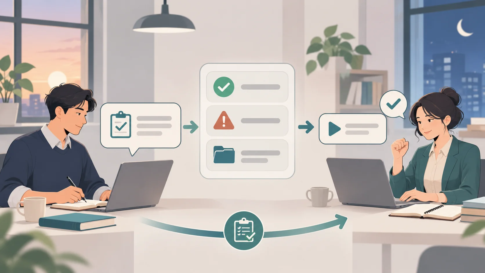

Article · 飞函
Article · 飞函
跨时区项目组交接事项，怎样让下一位负责人看清最新进展
北京的研发负责人结束一天工作时，欧洲的测试同事刚开始处理问题。如果交接只留下一句“已经沟通，继续跟进”，接手人仍要翻聊天记录、核对文件版本，再猜测谁在等待谁。时间花在还原现场上，真正需要推进的事项就会被耽搁。
跨时区项目组需要的交接，不是把一天的消息压缩成一段话，而是让下一位负责人打开记录后，能立即回答三个问题：现在到哪一步、卡在哪里、我接下来做什么。
把“最新进展”写成可接手的状态
每个待交接事项保留一条持续更新的记录，约定由当前负责人在离线前更新。内容可以很短，但要有明确字段：
| 字段 | 接手人需要看到什么 |
|---|---|
| 当前状态 | 已完成什么，哪些结果还在等待确认 |
| 最近变化 | 本轮新增的结论及更新时间，时间注明时区 |
| 阻塞与依赖 | 卡在哪个问题，正在等待谁提供什么 |
| 下一步 | 具体动作、执行人和预期时间 |
| 依据材料 | 对应的文件、讨论结论或问题记录的位置 |
例如，“测试还没过”很难接手；“截至北京时间 18:00，登录流程已复测通过，文件上传失败仍待研发定位；欧洲测试负责人明日 09:00（当地时间）按更新后的构建版本重试，并在同一记录中补充结果”则能直接指导下一步。状态变化时更新原记录，并标明变化时间，避免多份交接消息相互冲突。
让下一位负责人确认责任边界
交接不等于把消息发出去。当前负责人离线前，应指出尚未完成的动作和对应责任人；接手人上线后，在同一讨论上下文中确认已接手，并说明首次检查的时间。如果发现依赖材料缺失或责任人不清，应先澄清，再继续推进。
对跨越多个工作日的事项，还要约定谁维护主记录。会议结论、临时讨论和文件更新都可以发生在不同位置，但最终状态应回到这条记录。这样，接手人不必从消息先后顺序推断哪个说法有效。

用飞函承接沟通，保留资料线索
这套交接方法可以放在团队已有的协作流程中执行。飞函的即时通讯支持历史消息同步、全局搜索和重要消息，适合让交接讨论留在可追溯的沟通上下文里；需要共同查看的文件，可放在网盘共享空间，并按成员或部门设置共享权限。交接记录中写清文件位置和版本，接手人就能从状态直接找到依据。
工具负责承接消息和资料，团队仍需约定更新时点、记录格式与接手确认动作。尤其在多人轮班时，“谁更新状态、谁确认接手”比多发一条提醒更能减少责任空档。
可以先从一个持续推进的事项试行：每次下线前更新状态和下一步，每次上线后确认接手；运行几轮后，检查接手人是否还需要反复追问进展。如果仍要翻查大量消息，就补齐记录中的缺口，而不是继续增加交接消息的数量。